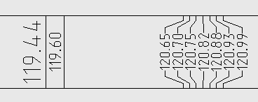
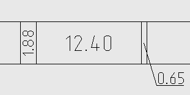

Команда: profile_calculation_line_in_basement
Команда: profile_calculation_line_in_basementВычисляет параметры (длины, уклоны, отметки) линии на профиле и помещает в указанную строку подвала
Команда: profile_calculation_line_in_basement
 Текущий профиль:[имя текущего профиля]
Текущий профиль:[имя текущего профиля]
Выбери полилинию на профиле:
 Указывает 2d полилинию на профиле
Указывает 2d полилинию на профиле
Укажи заполняемую строку подвала:
Указывает точку в строке подвале профиля.
Программа заполняет строку в соответствии с ее типом, например: если строка определена как отметки будет заполнена вычисленными отметками вершин выбранной полилинии, строка расстояний будет заполнена горизонтальными проложениями между вершинами полилинии на профиле и т.д.
Одна из причин из за которой я решил написать свои инструменты по созданию профиля это то, что в civil профиле при близком расположении опметки налазиют друг на друга. У меня реализован такой алгоритм нанесения отметок: если тексту отметки ничего не мешает он чертится как задано в настройках высоты текста для данной строки; если мешает близкое расположение другого текста высота текста уменьшается, но не меньше 1.6 мм на бумаге (она считается минимальной по читаемости на бумаге по версии условных знаков, насколько я помню); если не удается вместить текст в 1.6 мм рисуются "паучки" и высота их текста фиксировано 2.0 мм на бумаге.
Пример нормальной и ужатой высоты текста отметки, а так же "паучок", по другим данным "цветочек". :)
В случае с горизонтальными проложениями несколько иная ситуация: когда все свободно надпись распологается горизонтально как только перстает влезать поворачивается вертикально и уменьшается высота текста но не меньше 1.6 мм на бумаге, в конце концов делается выноска.
Пример подписи горизонтальных проложений.

С длинной/уклоном та же ситуация: вращением, изменением высоты текста пытается втиснуть в строку выноска как последний вариант, при не возможности сохранить высоту текста 1.6 мм на бумаге.